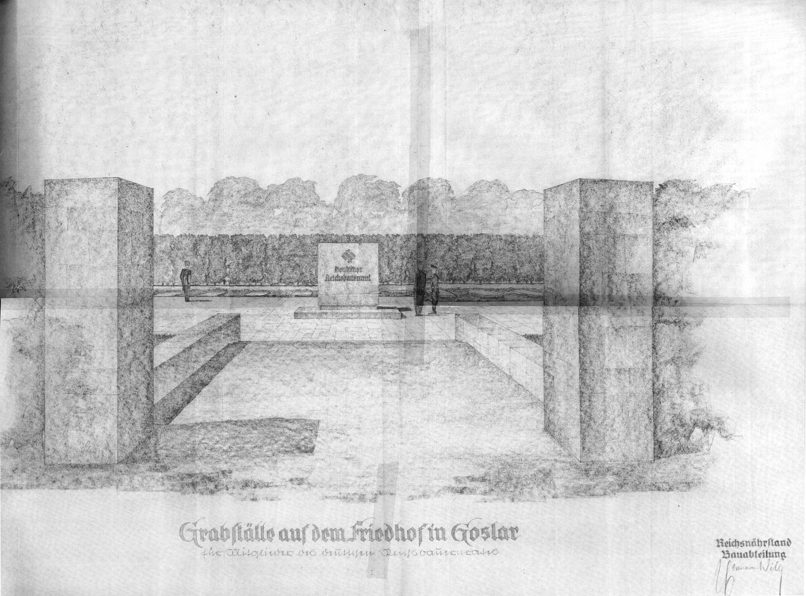
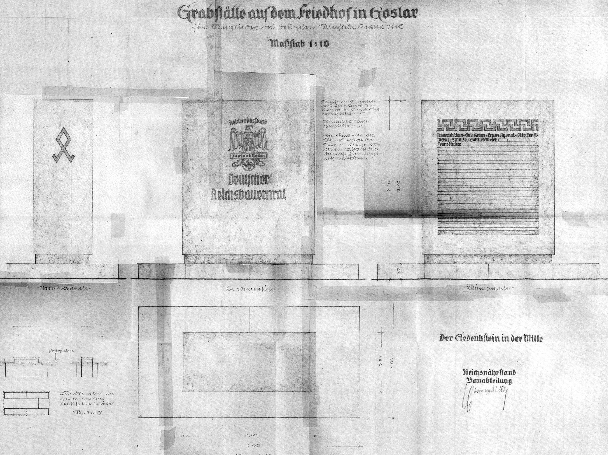

Goslar in der NS-Zeit
Grabanlage Darré
Diese Grabstätte wurde anlässlich des Todes von Eleonore Darré, geb. Lagergren, der Mutter Richard Walther Darrés, am 22. Juli 1936 als Familiengrab errichtet. Hier wurden auch er
selbst 1953 und seine zweite Frau Charlotte Darré, geb. von Vietinghoff-Scheel 1977 bestattet. Auf dem Gräberfeld 29 sollte eine opulente Grabstätte für die Mitglieder des „Deutschen
Reichsbauernrates“ (RBR) errichtet werden. Dieser wurde 1934 von Reichsbauernführer Darré gegründet.
Ihm gehörten alle Landesbauernführer und ihre jeweiligen Vertreter, hohe Funktionäre des Reichsnährstandes und Personen an, die sich nach nationalsozialistischer Auffassung um das deutsche Bauerntum besonders verdient gemacht hatten, wie z. B. der Reichsführer SS Heinrich Himmler und Prof. Konrad Meyer, der später den „Generalplan-Ost", die räumliche Eroberung Osteuropas und physische Vernichtung und Versklavung der Bevölkerung mitzuverantworten hatte. Die Mitglieder wurden von Darré persönlich berufen. Der RBR hatte seiner Satzung nach eine beratenden Funktion für den Reichsbauernführer, war aber de facto ein Machtinstrument Darrés. Die Mitglieder mussten ihre Loyalität durch einen Eid (Treueverpflichtung) bekräftigten. 1939 hatte der RBR 175 Mitglieder, davon waren 119 in der SS. Einige der Zusammenkünfte des RBR fanden zu den Reichsbauerntagen in der Kaiserpfalz statt.
Die Pläne zur Errichtung der Grabstätte ließen sich nicht verwirklichen und wurden mit der Beurlaubung Darrés 1942 eingestellt. Es wurden jedoch zwei Mitglieder des RBR auf dem Feld 29 feierlich beigesetzt, deren Gräber heute noch bestehen
Richard Arauner (1902-1936)
1923 trat Arauner dem Freikorps Bund Oberland bei und war am gescheiterten Hitler- Ludendorff-Putsch in München beteiligt. Ab 1931 war er Geschäftsführer des Agrarpolitischen Apparates der NSDAP, mit dem Darré alle landwirtschaftlichen Organisationen eroberte und gleichschaltete. Ab 1933 führte Arauner das Amt für Agrarpolitik in der Reichsleitung der NSDAP in München. Am 1.10.1933 trat er der SS bei und war ab da im Rasse- und Siedlungsamt der SS verankert. Am 1.1.1934 wurde Arauner Geschäftsführer und „Siegelbewahrer“ des Reichsbauernrats. Am 1.11.1936 kam er auf dem Rückflug von einer Dienstreise ums Leben, als das Flugzeug im Thüringer Wald abstürzte. Der Reichsführer SS Heinrich Himmler beförderte Richard Arauner posthum in den Rang eines Obersturmführers.
Hilmar von der Decken (1877-1940)
Bereits im Juli 1930 trat von der Decken der NSDAP und im November 1930 der SS bei. Im Mai 1931 holte ihn Darré nach München in das im Aufbau befindliche Rasse- und Siedlungsamt der SS. Ab Januar 1933 arbeitete von der Decken im persönlichen Stab des späteren Reichbauernführers. Bis zu seinem Tod leistete er Schulungsarbeit im Rasse- und Siedlungshauptamtes der SS (RuSHA). Er brachte es bis zum SS-Rang eines Standartenführers. Seit 1934 war er Mitglied auf Lebenszeit des RBR. Am 22. 2. 1940 verstarb er an einer Lungenentzündung in Hannover und wurde feierlich neben Richard Arauner beigesetzt.
Ihm gehörten alle Landesbauernführer und ihre jeweiligen Vertreter, hohe Funktionäre des Reichsnährstandes und Personen an, die sich nach nationalsozialistischer Auffassung um das deutsche Bauerntum besonders verdient gemacht hatten, wie z. B. der Reichsführer SS Heinrich Himmler und Prof. Konrad Meyer, der später den „Generalplan-Ost", die räumliche Eroberung Osteuropas und physische Vernichtung und Versklavung der Bevölkerung mitzuverantworten hatte. Die Mitglieder wurden von Darré persönlich berufen. Der RBR hatte seiner Satzung nach eine beratenden Funktion für den Reichsbauernführer, war aber de facto ein Machtinstrument Darrés. Die Mitglieder mussten ihre Loyalität durch einen Eid (Treueverpflichtung) bekräftigten. 1939 hatte der RBR 175 Mitglieder, davon waren 119 in der SS. Einige der Zusammenkünfte des RBR fanden zu den Reichsbauerntagen in der Kaiserpfalz statt.
Die Pläne zur Errichtung der Grabstätte ließen sich nicht verwirklichen und wurden mit der Beurlaubung Darrés 1942 eingestellt. Es wurden jedoch zwei Mitglieder des RBR auf dem Feld 29 feierlich beigesetzt, deren Gräber heute noch bestehen
Richard Arauner (1902-1936)
1923 trat Arauner dem Freikorps Bund Oberland bei und war am gescheiterten Hitler- Ludendorff-Putsch in München beteiligt. Ab 1931 war er Geschäftsführer des Agrarpolitischen Apparates der NSDAP, mit dem Darré alle landwirtschaftlichen Organisationen eroberte und gleichschaltete. Ab 1933 führte Arauner das Amt für Agrarpolitik in der Reichsleitung der NSDAP in München. Am 1.10.1933 trat er der SS bei und war ab da im Rasse- und Siedlungsamt der SS verankert. Am 1.1.1934 wurde Arauner Geschäftsführer und „Siegelbewahrer“ des Reichsbauernrats. Am 1.11.1936 kam er auf dem Rückflug von einer Dienstreise ums Leben, als das Flugzeug im Thüringer Wald abstürzte. Der Reichsführer SS Heinrich Himmler beförderte Richard Arauner posthum in den Rang eines Obersturmführers.
Hilmar von der Decken (1877-1940)
Bereits im Juli 1930 trat von der Decken der NSDAP und im November 1930 der SS bei. Im Mai 1931 holte ihn Darré nach München in das im Aufbau befindliche Rasse- und Siedlungsamt der SS. Ab Januar 1933 arbeitete von der Decken im persönlichen Stab des späteren Reichbauernführers. Bis zu seinem Tod leistete er Schulungsarbeit im Rasse- und Siedlungshauptamtes der SS (RuSHA). Er brachte es bis zum SS-Rang eines Standartenführers. Seit 1934 war er Mitglied auf Lebenszeit des RBR. Am 22. 2. 1940 verstarb er an einer Lungenentzündung in Hannover und wurde feierlich neben Richard Arauner beigesetzt.


Pläne der RBR-Grabstätte

Pläne der RBR-Grabstätte